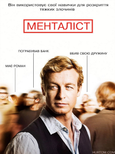

Supernatural
Смотреть сериал
«Сверхъесте́ственное» (англ. Supernatural) —
американский телесериал в жанре тёмного фэнтези,
созданный Эриком Крипке.
Премьера телесериала состоялась на телеканале The WB
13 сентября 2005 года, а затем он стал частью
программы телеканала The CW, который образовался
после слияния The WB и UPN. С Джаредом Падалеки и
Дженсеном Эклсом в главных ролях Сэма и Дина
Винчестеров соответственно, сериал повествует о двух
братьях — охотниках за нечистью, которые путешествуют
по США на чёрной Chevrolet Impala 1967 года, расследуя
паранормальные явления, многие из которых основаны на
городских легендах и фольклоре, а также сражаются с
порождениями зла: демонами, призраками и другой
нечистью.
До того, как «Сверхъестественное» стало телесериалом,
его создатель Эрик Крипке разрабатывал проект на
протяжении почти 10 лет, будучи увлечённым
городскими легендами с раннего детства.
Изначально представляя «Сверхъестественное» как
фильм, Крипке провёл годы, претворяя идеи в
телесериал. Концепция несколько раз менялась,
проделав путь от оригинальной идеи сериала-антологии
и задумки о двух репортёрах, которые «колесят по
стране и сражаются с демонами в поисках правды» до
окончательного проекта телесериала. Крипке
хотел, чтобы это обязательно был телесериал о
путешествии, почувствовав, что это «наилучший способ
рассказать эти истории, так как это чисто, кратко и
уникально по-американски… Эти истории существуют в
маленьких городках по всей стране, и очень много
значит, что мы погружаемся в них, а затем покидаем»

Mentalist
Смотреть сериал
Главный герой — Патрик Джейн (Саймон Бейкер),
превосходный менталист, психолог-практик и манипулятор,
некогда притворявшийся «экстрасенсом» и «ясновидящим».
Джейн помогает Калифорнийскому бюро расследований
США[en] (КБР) в раскрытии различных тяжких
преступлений, однако основная причина сотрудничества
Патрика с КБР — желание поймать серийного убийцу по
прозвищу Кровавый Джон (англ. Red John, также Красный
Джон), который убил жену и дочь главного героя за
пять лет до событий первого эпизода сериала.
Джейн является консультантом в отделе КБР. На
протяжении семи сезонов он занимался поисками Красного
Джона, помогая попутно раскрывать другие преступления,
а также разоблачил заговор внутри правоохранительных
органов.
Grimm
Смотреть сериал
События разворачиваются в наши дни в Портленде, штат
Орегон. Главный герой — детектив Ник Беркхард
работает в полицейском департаменте города и
расследует убийства. Однажды он увидел, как красивая
девушка на его глазах превратилась в страшное
чудовище, при этом другие люди даже не обратили
на это внимания. Его тетя, Мэри Кесслер, сказала,
что таковы способности Гримма — видеть настоящий
облик существ и что Ник последний потомок братьев
Гримм. На протяжении веков их род защищал невинных
людей от этих сверхъестественных тварей.
Напарник Ника, Хэнк Гриффин, до поры до времени
даже и не подозревал, что происходит с его другом.
Однако Нику пришлось ему все рассказать, когда во
время одного из расследований Хэнк увидел как
превращается умершее существо. Проблема поверить
в невероятное чуть не свела его с ума и только Ник
мог помочь, раскрыв ему правду.
Невеста Ника, Джульетта, тоже замешана в
сверхъестественные события. Однажды он попытался
рассказать ей все прямо перед тем, как она
заболела от магического отравления ведьмы. Это
заставило Ника здорово поволноваться, особенно
когда, придя в себе, любимая девушка вспомнила
все, кроме него.
В полицейском участке сержант Ву также попал
под воздействие магии, но благодаря
вмешательству Ника и его друзей остался жив.
Капитан участка — Шон Ренард — скрывает
какой-то страшный и темный секрет. Стоя на
защите порядка он порой плетет какие-то замыслы
и интриги вокруг Гримма.
Открыв для себя совершенно новый и неизвестный
мир, Ник заводит дружбу с существами, без помощи
которых ему трудно было бы выжить. Его лучшим
другом стал Монро — потрошитель, но давно
отошедший от дел. Он знает о мире Гримма намного
больше, чем сам Ник, который новичок в этом
деле. Позже Ник встретился с довольно милой и
совершенно не жестокой Розали Калверт, которая
рыжехвост. Она работает в лавке пряностей и
помогает другим существам.
В наиболее темный период жизни Ника внезапно
появилась его мать, тоже Гримм, и которую он
считал давно умершей. Она вернулась, чтобы
помочь ему и поддержать, а также найти весьма
опасные монеты Закинтоса.
Каждый эпизод начинается с небольшой цитаты,
обычно взятой из одного из рассказов братьев
Гримм, выражения или фразы какого-нибудь
философа, имеющей связь с событиями серии.
Hawaii-Five-0
Смотреть сериал
Стив Макгарретт, бывший морской офицер с
массой наград, а теперь полицейский детектив,
возвращается на Оаху расследовать убийство
отца. Он остается на острове, после того,
как губернатор штата Гавайи убедила его
возглавить новую команду. Команда будет
действовать по его правилам, при поддержке
губернатора, без бюрократических проволочек,
и с полным иммунитетом, всё это — чтобы поймать
самую крупную «дичь» на острове.
К Макгарретту присоединяется детектив Дэнни
«Дэнно» Уильямс, недавно переведенный из
Нью-Джерси полицейский, который предпочёл
бы небоскребы пляжам, но готов бороться с
преступностью, чтобы его 8-летняя дочь
чувствовала себя на островах в безопасности;
и Чин Хо Келли, бывший детектив полиции
Гонолулу, которого ошибочно обвинили в
коррупции, и который когда-то был протеже
отца Макгарретта. Двоюродная сестра Чина — Коно
Калакауа, прекрасная и бесстрашная уроженка
островов, недавно выпустилась из академии, и
рвётся доказать, что она достойна места в элите
департамента. Макгарретт клянётся завершить дело
отца, а члены нового спецотряда 5.0 настроены
уничтожить преступность в пятидесятом штате
Lucifer
Смотреть сериал
Люцифер — американский телесериал, который с первого
по третий сезоны выходил на телеканале FOX после
чего сериал был закрыт, но 16 июня 2018 года
стриминговый сервис Netflix выкупил права и продлил
его сначала на четвёртый, а затем на пятый и шестой
сезоны. В его основе лежит одноимённый комикс,
созданный Нилом Гейманом и Майком Кэри и изданный
компанией Vertigo совместно с компанией DC Comics.
О начале съёмок сериала было объявлено в феврале
2015 года, а его показ начался в январе 2016 года.
Персонаж Люцифера Морнингстара был создан писателем
Нилом Гейманом в его комиксах "Песочный человек" в
1989 году. В 1999 году писатель Майк Кэри написал
спин-офф этого комикса под названием "Песочный человек
настоящее: Люцифер", а потом и серию комиксов о самом
Люцифере. Она содержала 75 выпусков и была закончена
в 2006 году.
Castle
Смотреть сериал
В центре сюжета находится Ричард Касл (Нейтан
Филлион), известный писатель в жанре детективов.
Рик живёт в одном доме со своей матерью, звездой
Бродвея Мартой Роджерс (Сьюзен Салливан), и
находчивой дочерью Алексис Касл (Молли Куинн).
Будучи в творческом кризисе, писатель узнаёт,
что реальный преступник начал подражать сценам
убийств из его книг.
Касла допрашивает детектив из 12-го участка
полиции Нью-Йорка Кейт Беккет (Стана Катич).
Кейт умна, привлекательна, решительна и держит
расследование под жёстким контролем. Касл не
может упустить шанс отвлечься от своей
наскучившей обыденности и решает помочь в
расследовании и поимке загадочного убийцы.
Имея дружеские отношения со многими
влиятельными людьми города, он получает
возможность присутствовать на всех
расследованиях, проводимых детективом Беккет,
пока не соберёт достаточно материала для своей
следующей книги. Беккет становится прообразом
для героини его книг — Никки Хит.
Ричард неформально входит в группу следователей
полиции Нью-Йорка. В ходе расследований
сложных уголовных дел Касл нередко объясняет
происшедшее, прибегая к различным маргинальным
научным теориям, вмешательству сверхъестественных
сил, пришельцев и теориям заговора. Беккет, как
правило, прислушивается к здравому смыслу и ищет
некое рациональное объяснение событиям. После
выхода очередной книги их личные отношения
продолжают развиваться, пара расследует
многочисленные преступления, совершаемые в
Нью-Йорке. В конце четвёртого сезона Касл и
Беккет признаются друг другу в любви и
начинают отношения. В конце пятого сезона
Касл, узнав о том, что Беккет предложили
новое место работы в Вашингтоне, делает ей
предложение. Свадьба состоялась в шестой серии
седьмого сезона.